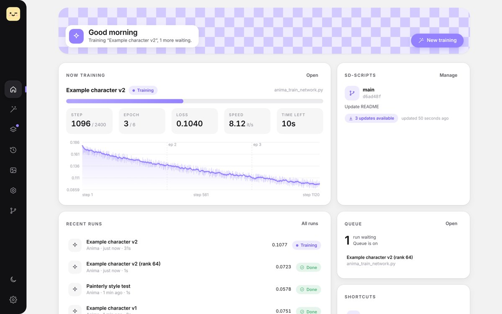
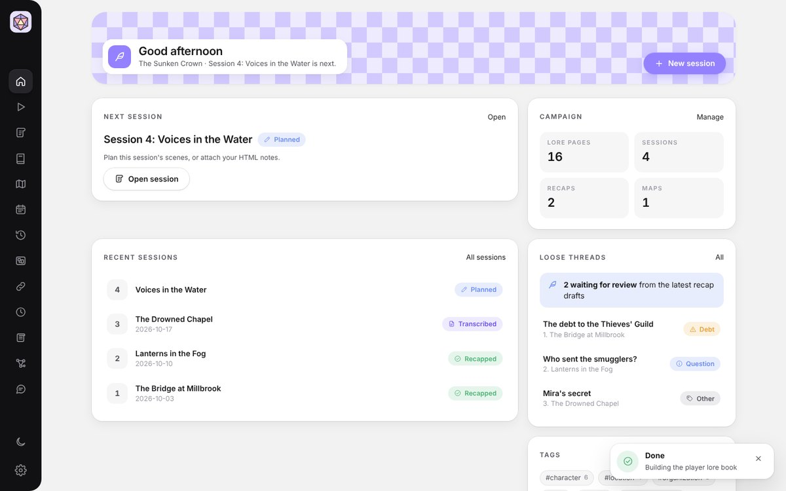

I'm an illustrator and artist who has been exploring Generative AI and Machine Learning. I train LoRAs, run tabletop campaigns, and make simple tools for both.
A couple of years ago I got curious about AI and machine learning. I taught myself how to train LoRAs from scratch, but the learning curve was pretty steep, so I make tools to help learning feel a little less intimidating.
I'm also a game master, and keeping a whole world's worth of lore, plans and session notes in order is a lot. So I made a tool for that too.
Windows & Linux · free & open source
A soft, simple desktop app for training LoRAs with kohya-ss/sd-scripts. Live loss graph, training queue, dataset tools, sample grids, and one-click sending to SwarmUI or ComfyUI.
Get it on GitHub
Windows & Linux · free & open source
A cozy desktop app for game masters. Keep your world's lore and maps, plan and run sessions, and turn session recordings into transcripts and recaps with Claude, a local AI, or no AI at all. Plus a calendar, timeline, faction clocks and a lore book to share with players.
Get it on GitHub